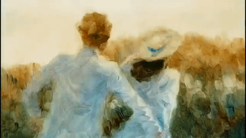
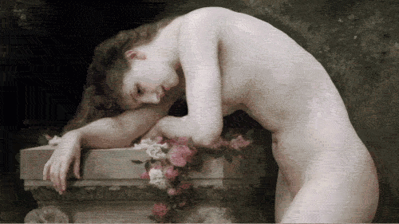

Conheça um pouco dos melhores artistas
Vincent van Gogh (1853-1890) foi um importante pintor holandês, um dos maiores representantes da pintura pós-impressionista. Vincent Willem van Gogh (1853-1890) nasceu em Zundert, uma pequena aldeia holandesa, no dia 30 de março de 1853. Filho de um pastor calvinista era uma criança rebelde e insociável.

Tarsila de Aguiar do Amaral, internacionalmente conhecida como Tarsila do Amaral ou simplesmente Tarsila, é considerada uma das principais artistas modernistas da América Latina, descrita como "a pintora brasileira que melhor atingiu as aspirações brasileiras de expressão nacionalista em um estilo moderno.".

Anita Catarina Malfatti foi uma pintora, desenhista, gravadora, ilustradora e professora ítalo-brasileira. Anita Malfatti era portadora de deficiência motora. É considerada pioneira da Arte Moderna no Brasil.
Vangogh- Os comedores de batata
O artista repassa para o observador a penúria em que vivem os camponeses, assim como a melancolia e a desesperança que carregam. Comprometido com a vida dos pobres, esta obra é um manifesto contra as desigualdades sociais, fato que muito machucava o pintor.
Tarsila do Amaral - Abaporu
Abaporu é uma clássica pintura do modernismo brasileiro, da artista Tarsila do Amaral. ... Na pintura vemos um homem com grandes pés e mãos, e ainda o sol e um cacto. Estes elementos podem representar o trabalho físico que era o trabalho da maioria naquela altura.
Anita Malfatti - O Farol
É também conhecida como O Farol de Monhegan. Foi pintada na ilha de Monhegan, na costa leste estadunidense, ao ar livre, quando era aluna do professor Homer Boss, que permitia que seus alunos expressassem-se com liberdade, espalhando-se pelo local. Anita retrata o farol da ilha e as casinhas próximas a ele.